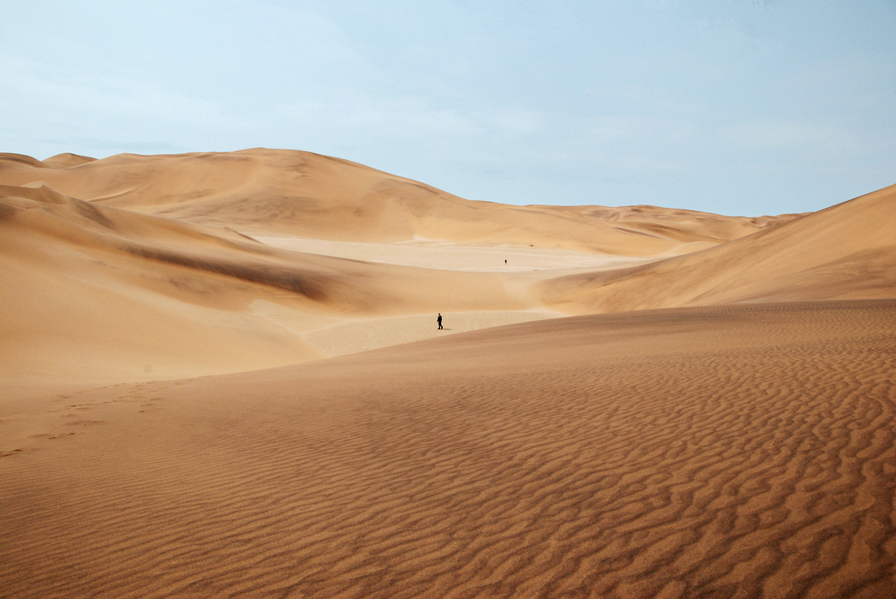
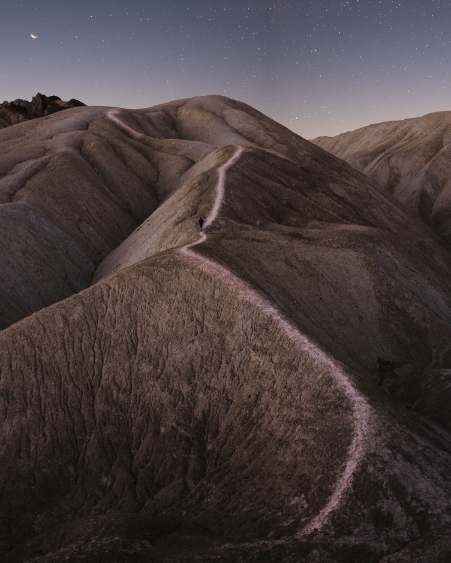
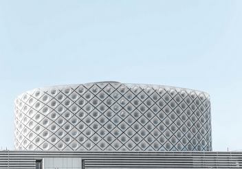

NIHI SUMBA
Li said he hoped Beijing’s latest air pollution crisis would also remind the public that while.
$67
BOOK NOW
Dozens of flights were reportedly cancelled at Beijing’s airport, the world’s second busiest, and authorities.
TO LEAVELi, the Greenpeace activist, said the sandstorm was reminiscent of those witnessed about two decades ago before a large-scale reforestation campaign in northern China helped reduce the number of sandstorms reaching the capital.
READ MORELi said he hoped Beijing’s latest air pollution crisis would also remind the public that while.
Sandstorms have traditionally been a problem for Beijing and for the northern part of China.
Last December tens of thousands of smog refugees were forced to flee China’s pollution-stricken.


Li said he hoped Beijing’s latest air pollution crisis would also remind the public that while.

Sandstorms have traditionally been a problem for Beijing and for the northern part of China.
Last December tens of thousands of smog refugees were forced to flee China’s pollution-stricken.